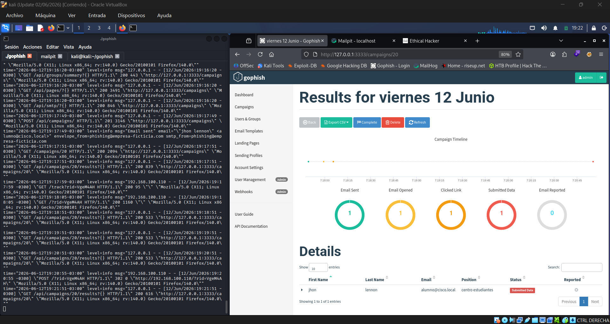
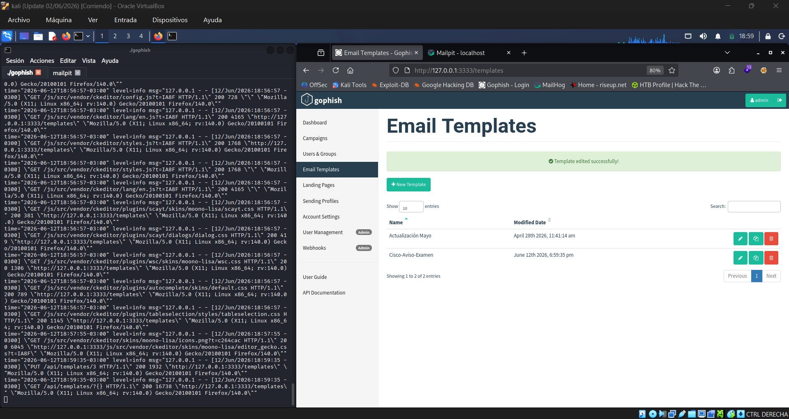
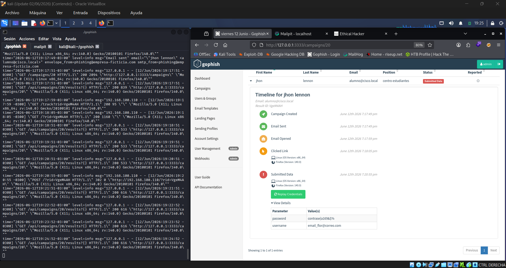

Laboratorio práctico con GoPhish + Mailpit en Kali Linux: creación de plantillas, landing pages, perfiles SMTP y análisis forense de resultados — con fines educativos y de concientización en PyMEs.
Campaña "Viernes 12" — el objetivo abrió, hizo clic y envió credenciales en un único flujo, sin ser detectado.
Reconstrucción cronológica del ataque para el objetivo "jhon lennon" — OS detectado automáticamente: Linux x86_64 · Firefox 140.0
Capturas completas de la campaña, con branding de prueba (Cisco 2026) construido en HTML puro sobre plantillas de GoPhish.


{{.FirstName}}, {{.URL}}).
Tecnologías usadas para levantar el laboratorio completo, de punta a punta.